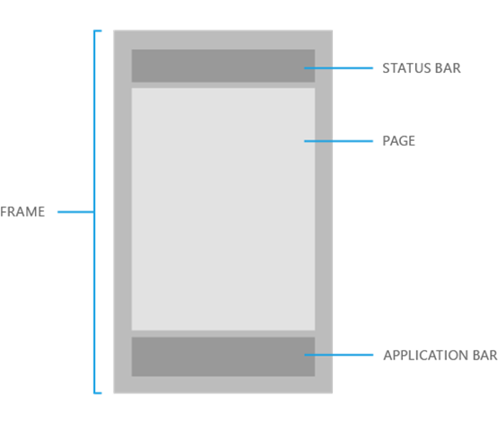

导航概述
应用程序的页面导航功能能够使用户按照自己的兴趣在多个页面间进行跳转，各开发平台都提供了相应的页面导航机制。例如，在Android应用开发中，开发者可以使用Intend从一个Activity导航到另一个Activity，IOS中可以使用UINavigationController进行页面跳转。
相应地，在windows phone 8中页面都为PhoneApplicationPage类型，该类型具有NavigationService类型的成员，您可以使用NavigationService类型的Navigate方法进行页面导航。在windows 8中页面为Page类型，该类型具有Frame类型的成员，您可以使用Frame类型的Navigate方法在页面之间进行导航。从一个页面导航到另一页面时可以同时传递参数。系统会自动创建存储页面导航历史记录的堆栈，确保用户能够通过按设备的返回按钮返回到上一页面。
有时我们可能会在导航的过程中根据条件改变导航目的页。例如为应用启用fast app resume功能后，在用户进入应用程序时需要判断导航到Home页还是用户上次离开的页面。您可以在应用程序框架的导航事件中进行判断导航方向、取消导航等操作。
以下将对页面导航的相关内容分别进行详细介绍。
页面间导航
Windows Phone
在 Windows Phone 应用程序中，用户可以向前导航到不同的内容屏幕。此外，您也可以使用 Windows Phone 的“返回”硬件按键向后移动。此模型允许开发人员执行以下操作：
● 轻松创建基于视图且完全适合 Windows Phone 导航模型的应用程序
● 提供与 Windows Phone 外观匹配的默认转换
核心元素包括一个称为 PhoneApplicationFrame 的顶级容器控件，该控件可托管 PhoneApplicationPage。页面包含应用程序中内容的具体部分。Windows Phone 应用平台 提供了框架和页面类，以便导航到不同部分的内容。您可以创建所需的任何数目的不同页面，以便在您的应用程序中展现内容，然后从框架导航到这些页面。下图显示了应用程序可能具有的框架和页面层次结构。

执行页面导航主要使用页面的NavigationService.Navigate方法，例如在 MainPage.xaml 和 SecondPage.xaml 之间进行前后导航：
1. 在 MainPage.xaml 中，将“工具箱”中的 HyperlinkButton 控件拖动到设计器界面。选择该控件并将“内容”属性更改为“Navigate to Second Page”，或者直接在 XAML 中进行更改。您可能需要扩展控件宽度才能看到所有文本。
2. 双击超链接按键以便添加超链接点击事件的事件处理程序。将打开 MainPage.xaml.cs 文件。
3. 为 hyperlinkButton1_Click 事件处理程序添加以下代码：
private void hyperlinkButton1_Click(object sender, RoutedEventArgs e)
{
NavigationService.Navigate(new Uri("/SecondPage.xaml", UriKind.Relative));
}4. 在 SecondPage.xaml 中，将 Button 控件拖动到设计器界面。选择该控件并将“内容”属性更改为“Navigate Back to Main Page”，或者直接在 XAML 中进行更改。您可能需要扩展控件宽度才能看到所有文本。
5. 双击按键以便添加按键点击事件的事件处理程序。将打开 SecondPage.xaml.cs 文件。
6. 为 button1_Click 事件处理程序添加以下代码：
private void button1_Click(object sender, RoutedEventArgs e)
{
NavigationService.GoBack();
}这样，在运行应用时，您会看到应用包含两个页面：main page 和 second page。您可以使用包含已在其事件处理程序中配置的目标 URI 的超链接来从 main page 导航到 second page。通过使用导航服务的 GoBack() 方法，您可以从 second page 返回 main page。
Windows 8
在windows 8 中执行页面导航主要使用Frame.Navigate方法。例如，在BasicPage1和BasicPage2页面之间进行导航：
1.在 BasicPage1.xaml 中找到名为 pageTitle 的 TextBlock 元素，并将 Text 属性更改为 Page 1
2. 将下列 XAML 作为第二个子元素添加到根 Grid。 StackPanel 元素应当为包含“后退”按钮和页面标题的 Grid 的同级
3.在 BasicPage2.xaml中找到名为 pageTitle 的 TextBlock 元素，并将 Text 属性更改为 Page 2
4. 将下列 XAML 作为第二个子元素添加到根 Grid。 StackPanel 元素应当为包含“后退”按钮和页面标题的 Grid 的同级
5. 将如下代码添加到 BasicPage1.Xaml.cs中的 BasicPage1 类
privatevoid HyperlinkButton_Click_1(object sender, RoutedEventArgs e)
{
this.Frame.Navigate(typeof(BasicPage2));
}Android
Android中每个页面对应着一个Activity，页面的跳转与传值实际上是Activity的跳转与传值。Activity跳转与传值，主要是通过Intent类来连接多个Activity。
跳转传值方法：
Intent intent = new Intent(A.this, B.class);
startActivity(intent);IOS
IOS的页面跳转一般有两种实现方式：
1.利用UINavigationController，调用pushViewController，进行跳转；这种采用压栈和出栈的方式，进行Controller的管理。调用popViewControllerAnimated方法可以返回
PickImageViewController *ickImageViewController = [[PickImageViewController alloc] init];
[self.navigationController pushViewController: ickImageViewController animated:true];
[ickImageViewController release];2. 利用UIViewController自身的presentModalViewController，进行跳转；调用dismissModalViewControllerAnimated方法可以返回
PickImageViewController *ickImageViewController = [[PickImageViewController alloc] init];
[self presentModalViewController:ickImageViewController animated:YES];
[self dismissModalViewControllerAnimated:YES];导航时传递参数
Windows Phone
在 MainPage.xaml 中，将“工具箱”中的 TextBox 控件和 Button 控件拖动到设计器界面，并且将控件并列放置。清除控件属性内的 TextBox 控件的已有文本。对于 Button 控件，将控件重新命名为 passParam，并在控件属性中或直接在 XAML 中将按钮文本更改为“Go”。
双击 Go 按键以便添加按键点击事件的事件处理程序。将打开 MainPage.xaml.cs 文件。
为 passParam_Click 事件处理程序添加以下代码：
private void passParam_Click(object sender, RoutedEventArgs e)
{
NavigationService.Navigate(new Uri("/SecondPage.xaml?msg=" + textBox1.Text, UriKind.Relative));
}说明注意：
本行代码将用于导航到第二页内容，并传递在新建的 TextBox 中输入的字符串数据。
在 SecondPage.xaml 中，将“工具箱”中的 TextBlock 控件拖动到设计器界面。清除控件属性内的 TextBlock 控件的已有文本。为了方便查看，可能需要扩展控件的高度和宽度并选择更大的字体大小。另外，对于本示例，将已创建的 TextBlock 命名为“textBlock1”。
在 SecondPage.xaml.cs 中，创建下列方法：
protected override void OnNavigatedTo(System.Windows.Navigation.NavigationEventArgs e)
{
base.OnNavigatedTo(e);
string msg = "";
if (NavigationContext.QueryString.TryGetValue("msg", out msg))
textBlock1.Text = msg;
}通过选择“调试 | 启动调试”菜单命令运行应用。这将打开模拟器窗口并启动该应用。
在 main page 中，在 TextBox 控件中输入一些文本，然后点按“Go”。当到达 second page 时，您键入的文本将显示在 second page 的 TextBlock 控件中。
Windows 8
为展示在页面间导航时如何传递参数，我们继续使用页面间导航中windows8部分使用的示例，首先在BasicPage1.xaml 中，用如下代码替换你之前添加的 StackPanel：
然后，在 BasicPage1.xaml.cs 中，用如下代码替换 HyperlinkButton_Click_1 事件处理程序：
privatevoid HyperlinkButton_Click_1(object sender, RoutedEventArgs e)
{
this.Frame.Navigate(typeof(BasicPage2), tb1.Text);
}最后在BasicPage中接受BasicPage1传来的参数，故用如下代码替换BasicPage2.xaml.cs中空的 OnNavigatedTo 方法：
protectedoverridevoid OnNavigatedTo(NavigationEventArgs e)
{
string name = e.Parameter as string;
if (!string.IsNullOrWhiteSpace(name))
{
tb1.Text = "Hello, " + name;
}
else
{
tb1.Text = "Name is required. Go back and enter a name.";
}
}
运行应用，在文本框中输入你的名字，然后单击显示文字“单击以转到第 2 页”的链接。 当你在 HyperlinkButton 的Click 事件中调用 this.Frame.Navigate(typeof(BasicPage2),
tb1.Text); 时，tb1.Text 属性将在 BasicPage2 加载时被传递。 然后，BlankPage2 的 OnNavigatedTo 方法从 NavigationEventArgs.Parameter 属性获得值，并用它显示一条消息。
Android
Android应用程序通过Bundle类来传递数据。以下为传递参数和在目的页面接受数据的示例：
/* 通过Bundle对象存储需要传递的数据 */
Bundle bundle = new Bundle();
/*字符、字符串、布尔、字节数组、浮点数等等，都可以传*/
bundle.putString("Name", "feng88724");
bundle.putBoolean("Ismale", true);
/*把bundle对象assign给Intent*/
intent.putExtras(bundle);接收传来数据的方法：
@Override
public void onCreate(Bundle savedInstanceState) {
super.onCreate(savedInstanceState);
/*加载页面*/
setContentView(R.layout.main);
/*获取Intent中的Bundle对象*/
Bundle bundle = this.getIntent().getExtras();
/*获取Bundle中的数据，注意类型和key*/
String name = bundle.getString("Name");
boolean ismale = bundle.getBoolean("Ismale");
}后退堆栈
当在应用程序的不同页面间导航时，应用会在堆栈中记录导航页面的历史记录，表示为后进先出结构，故称为堆栈。此处该结构还称为后退堆栈，因为它在表示应用后退导航的堆栈结构中，包含一组页面。导航堆栈使应用能够实现向后导航。可以将该堆栈看成是一叠盘子。添加到该堆栈的最后一个盘子就是可以移除的第一个盘子。最新项被添加到此堆栈的顶部。此操作称为推送操作。通过从堆栈顶部一次删除一个项目，可以检索堆栈中的某些内容。从堆栈中删除顶部项的操作称为弹出操作。下图显示了堆栈的概念。

当应用中的页面调用 Navigate 时，当前页面会被放到后退堆栈上，并且系统将创建并显示目标页的新实例。当您在应用的页面之间进行导航时，系统会将多个条目添加到此堆栈。
当页面调用 GoBack 时，或者当用户按手机的“返回”按键时，将放弃当前页面，并将堆栈顶部的页面从后退堆栈中弹出并进行显示。此后退导航会继续弹出并显示，直到堆栈中不再有条目。此时，点按手机的“返回”按钮将退出应用。
大多数应用都无需处理后退堆栈，并且在默认导航中可以发挥完整功能。其它应用则需要调整导航历史记录，以提供最佳用户体验。例如，应用中可能有一个登录页面。您可能不希望用户在登录后能够导航回登录页面 。
页面导航其他相关内容
Windows phone取消导航和导航方向检测
NavigatingCancelEventArgs 类具有一个 Cancel 属性，可将其设置为取消已请求的导航。但是对于某些情况（如由系统而不是用户启动导航），则导航不可取消，并且设置 Cancel 属性无效。如果您的应用不能正确处理此类情况，则用户会丢失更改，因为无法取消导航并停留在当前页面。如果无法取消导航，可以采用另一种方法来保存用户的更改。
为了确定导航是否真正可取消，NavigatingCancelEventArgs 类中提供了一个新的 Boolean 属性 IsCancelable。true 表示可以取消导航；否则，无法取消导航。
网页过渡动画取决于导航的方向，向前或向后。为了指示所发生导航的类型，NavigationMode 类上提供了一个只读 NavigationMode 属性，以及一个构造函数重载以提供属性值。如果未使用构造函数，则 NavigationMode 的默认值是 New，表示用户正在导航至新内容。直接导航至外部应用。应用程序可以检测到外部应用程序的导航，因为在导航事件中传递的 URI 是 app://external/。但是在 Windows Phone 的原始版本中，无法通过任何直接的方法来检测传入导航是否来自外部源。对于自定义特定于不同类型导航的动画，此信息非常有用。
为了启用此功能，NavigationMode 和 NavigatingCancelEventArgs 类中提供了 Boolean 属性 IsNavigationInitiator。对于导航来自外部应用程序或“开始”屏幕或导航到其中的所有情况，此属性设置为 false。当导航是在应用程序的内部时，则设置为 true。还提供了一个新构造函数重载以设置此属性的值。如果未设置，则默认值为 true，表示属于应用内部的导航。
Windows phone页面导航最佳做法
您必须通过 Windows Phone 中定义的页面、屏幕和导航概念，尽可能将应用程序构建为在不使用其他页面的情况下处理各种方案。本节提供了使用有效页面模型的最佳做法：
- 屏幕和非导航的转换 - 对于登录屏幕等临时 UI，可以使用 Popup 控件显示部分覆盖屏幕的内容，而无需实施要求完整导航的单独屏幕。您可以在代码中添加 BackKeyPress 事件，并在弹出窗口显示时将e.Cancel 设置为 true，以使用户能够使用“返回”按键关闭该对话框。
- 多个内容视图 - 对于显示多部分内容的页面，只需将页面上的控件重新绑定到新 DataContext 即可以在不同的内容间转换，而无需使用导航。同时，还可以通过加载页面中 UserControl 的多个实例，或使用任何其他机制显示新内容来重新绑定。您可以选择用户可用来在项目中向前和向后转换的方法。例如，可以考虑使用上一个和下一个“应用程序栏”按键。但是，我们建议您避免过度使用“返回”按键进行本地转换。
- 保存状态和逻辑删除 - 您可以保存给定页面中发生转换的本地历史记录，从而在逻辑删除应用程序时，用户可以重新跟踪其步骤。对于诸如上一个或下一个浏览之类简单情形，只需将页面“状态”保存在当前索引中。通过执行此操作以及使用 NavigationContext API 应提供在从逻辑删除状态返回时遍历数据集所需的所有信息。对于具有较为复杂的本地转换历史记录的应用程序（如任意形式浏览链接项），可以选择将某些历史记录存储在页面状态中，但是您需要对存储的项设置一个合理的限制。对于用户而言，关键是使用硬件“返回”按键，将其返回到以前页面。它们不应该返回到以前查看的项。有关更多信息，请参见Windows Phone 的启动、恢复和多任务处理。
- 导航后退堆栈 - 后退堆栈中的页面保存在内存中。应用程序应该最大限度地降低后退堆栈中页面上使用的内存，例如释放大图片、缓存数据等。有关更多信息，请参见 Windows Phone 中的框架、页面和导航功能。
- 下表提供了有关可视为页面的应用程序通用部分的信息。
|
屏幕类型 |
页面 |
说明 |
|
初始屏幕 |
否 |
这是启动体验的瞬态部分，用户无法导航到该处。 |
|
全景体验 |
是 |
Windows Phone 应用程序的通用主屏幕方法。 |
|
详细信息页面 |
是 |
此页面通常适用于通过查询字符串参数化的以数据中心的应用。 |
|
Pivot 项目 |
否 |
数据透视项目是数据透视控件的一个小型组件，用于存放所需的内容。 |
|
登录或错误对话框 |
否 |
这是由应用程序状态触发的瞬态 UI，用户无法直接导航到该处。 |
|
项目枚举 |
否 |
用于浏览类似内容（作为就地活动，而非导航方法）。 |
|
UI 类型 |
实现 |
“返回”按键行为 |
逻辑删除行为 |
|
页面 |
PhoneApplicationPage控件 |
“返回”按键会自动返回或退出应用。您不应重写，除非出现数据丢失的情况。 |
自动保留在后退堆栈中。 |
|
屏幕瞬态 UI |
弹出窗口或子窗口 |
应用应重写以便取消弹出窗口。当按下“返回”按键时，屏幕键盘和 MessageBox 控件自动取消。 |
应用应在导航期间关闭或取消弹出窗口。 |
|
项目枚举 |
UserControl |
不可用：在父页中托管。 |
应用应保存适当的活动项目。 |
- 下表概括了您可以用于处理各种类型 UI 实现的方法
Windows8应用导航设计
Windows8应用的导航设计一般有两种：分层系统和平面系统
分层系统
Windows 8 中的大多数 Windows 应用商店应用都将使用导航的分层系统。此模式比较常见并且为人们 所熟悉，但是使用中心导航模式效果会更好。 这种模式使得 Windows 应用商店应用更快速流畅，同时易于使用。
此模式最适合具有大量内容或许多不同的内容部分供用户浏览的应用。
层次结构中的各层
中心设计的实质是将内容分为不同的部分和不同级别的详细信息。
中心页
中心页是用户到应用的 入口点。此处的内容 以水平方式显示在一个丰富的 平移视图中，这样用户 一眼就能看见新增内容和 可用功能。
中心由不同 别的内容构成，每个类别都映射到 应用的部分页中。 每个部分都应该显示 内容或功能。 中心应该提供许多 可以看到的变化，吸引用户，并 将他们吸引到应用的 各个部分。
部分页
部分页是应用的第二个 层级。此处的内容可以采用 任何形式显示，这些形式必须能够 最好地表示该方案及该部分所包含 的内容。
部分页由各个项目组 成，每个项目都有它自己 的详细信息页。 部分页还可以利用 分组和全景风格 布局。
详细信息页
详细信息页是应用的第三个 层级。此处显示了 各个项目的详细信息， 各项目的格式可能会根据 内容的特殊类型不同而 有很大的不同。
详细信息页由项目详细信息 或功能组成。 详细信息页可能包含许多信息 ，也可能包含一个 单一对象，例如图片 或视频。
平面系统
Windows 8 中的许多 Windows 应用商店应用都使用平面导航系统。此模式在游戏、浏览器或文档 创建应用中较为常见，用户可以在所有驻留在同一分层级别的页面、选项卡或模式 之间移动。
这种模式最适合核心方案涉及少量页面或选项卡之间的快速切换时。
内容页
平面系统在本质上会将内容分解为不同的页。
导航栏
导航栏非常适用于在 多个上下文之间执行 切换操作。示例包括选项卡、 文档以及消息或 游戏会话。
此页首应用栏是一个暂时元素， 驻留在屏幕的页首，并且当 用户从屏幕的上边缘或下边缘 轻扫时，页首应用栏可见。虽然页首应用栏中各项的格式可能 会不同，但是一个典型的处理方法是 使用一个简单的缩略图。
切换
与分层系统不同，在平面 系统中通常没有永久性的 后退按钮或导航堆栈， 因此在页面之间进行移动 通常通过内容或导航栏 中的直接链接 来完成。
你可以选择在 导航栏中包括其他功能， 例如添加一个 “+”按钮以创建一个新的选项卡、 页面或会话。
Windows8 页面缓存
在Windows应用商店应用中，默认的页面缓存状态是不缓存，你可以使用 NavigationCacheMode 属性来指定对一个页面进行缓存。 在 该页的构造函数中，将 NavigationCacheMode 设置为 Enabled。
另请参见
如何在 Windows Phone 上执行页面导航
在页面之间导航（使用 C#/VB/C++ 和 XAML 的 Windows 应用商店应用）